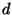
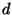

Structure Tools also provides a number of other types and functions with the purpose of making it easier to write rule functions.
Filename extension: Many tools derive the names of their targets from the name of their source. As discussed in section 11.1, CM provides some support for this via values of type extensionStyle:
type tooloptcvt = toolopts option -> toolopts option
datatype extensionStyle =
EXTEND of (string * class option * tooloptcvt) list
| REPLACE of string list * (string * class option * tooloptcvt) list
These values can not only be passed to Tools.registerStdShellCmdTool but also be used to let CM perform name extension directly. To do so, one must invoke function Tools.extend:
val extend : extensionStyle ->
(string * toolopts option) ->
(string * class option * toolopts option) list
Checking time stamps: A tool can check whether a given source file is older than all of its corresponding target files.
val outdated : string -> string list * string -> bool
In a call (Tools.outdated  (
( , )),
, )),  is the name of
the tool,
is the name of
the tool,  is the list of targets (as native file names),
and is the source (also as a native file name).
is the list of targets (as native file names),
and is the source (also as a native file name).
An alternative way of checking for outdated sources (in the style of the Noweb-tool; see section 6.2.6) is the following:
val outdated' : string ->
{ src: string, wtn: string, tgt: string } -> bool
The idea here is that if both tgt (``target'') and wtn (``witness'') exist, then tgt is considered outdated if wtn is older than src. Otherwise, if tgt exists but wtn does not, then tgt is considered outdated if it is older than src. If tgt does not exist, then it is always considered outdated.
File- and directory-creation: To open a text file for output in such a way that all directories leading up to it are created when they do not already exist, use Tools.openTextOut:
val openTextOut : string -> TextIO.outstream
To create the same directories without opening the file (and without even creating it if it does not exist), use function Tools.makeDirs:
val makeDirs : string -> unit
Note that the string passed to makeDirs is still the name of a file!
Option processing: For simple tools, the following function for ``parsing'' tool options can be useful:
val parseOptions :
{ tool : string, keywords : string list, options : toolopts } ->
{ matches : string -> toolopts option, restoptions : string list }
Given a list of accepted keywords, this function scans the tool options and collects occurrences of sub-option lists labelled by one of these keywords. Any sub-option list that is not recognized and any keyword that occurs more than once will be rejected as an error. The result consists of a function matches that can be uses to query each of the keywords. The function also collects and returns all the STRING options.
Issuing diagnostics: Functions Tools.say and Tools.vsay both take a list of strings and output the concatenation of these strings to the compiler's standard control output stream (i.e., usually TextIO.stdOut). The difference between say and vsay is that the former works unconditionally while the latter is controlled by CM.Control.verbose (see section 4.1.3).
Anchor-configurable strings: Mainly for the purpose of implementing anchor-configurable names for auxiliary shell commands (such as ml-yacc), one can invoke Tools.mkCmdName:
val mkCmdName : string -> string
If  is a path anchor that points to , then (mkCmdName
is a path anchor that points to , then (mkCmdName  )
returns /
)
returns / ; otherwise it returns
; otherwise it returns  .
.